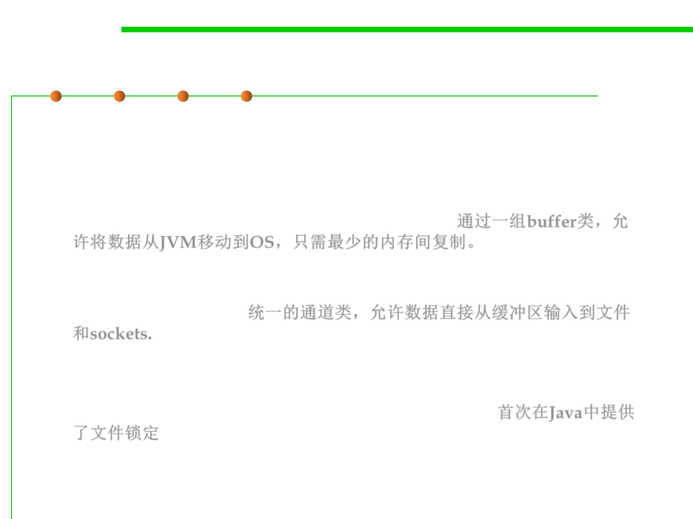

8.1 Metrics, Principles, and Methods of Construction for Performance
NIO: New I/O
▪ New I/O changes that by providing:
– A hierarchy of dedicated buffer classes that allow data to be moved from
the JVM to the OS with minimal memory-to-memory copying, and
without expensive overheads like switching byte order; effectively buffer
classes give Java a “window” on system memory. 通过一组buffer类，允
许将数据从JVM移动到OS，只需最少的内存间复制。
– A unified family of channel classes that allow data to be fed directly from
buffers to files and sockets, without going through the intermediaries of
the old stream classes. 统一的通道类，允许数据直接从缓冲区输入到文件
和sockets.
– A family of classes to directly implement selection (AKA readiness testing,
AKA multiplexing) over a set of channels.
– NIO also provides file locking for the first time in Java. 首次在Java中提供
了文件锁定